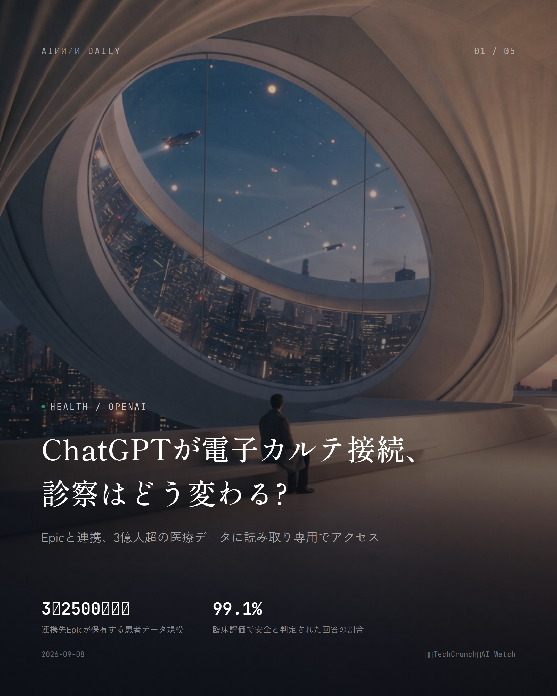
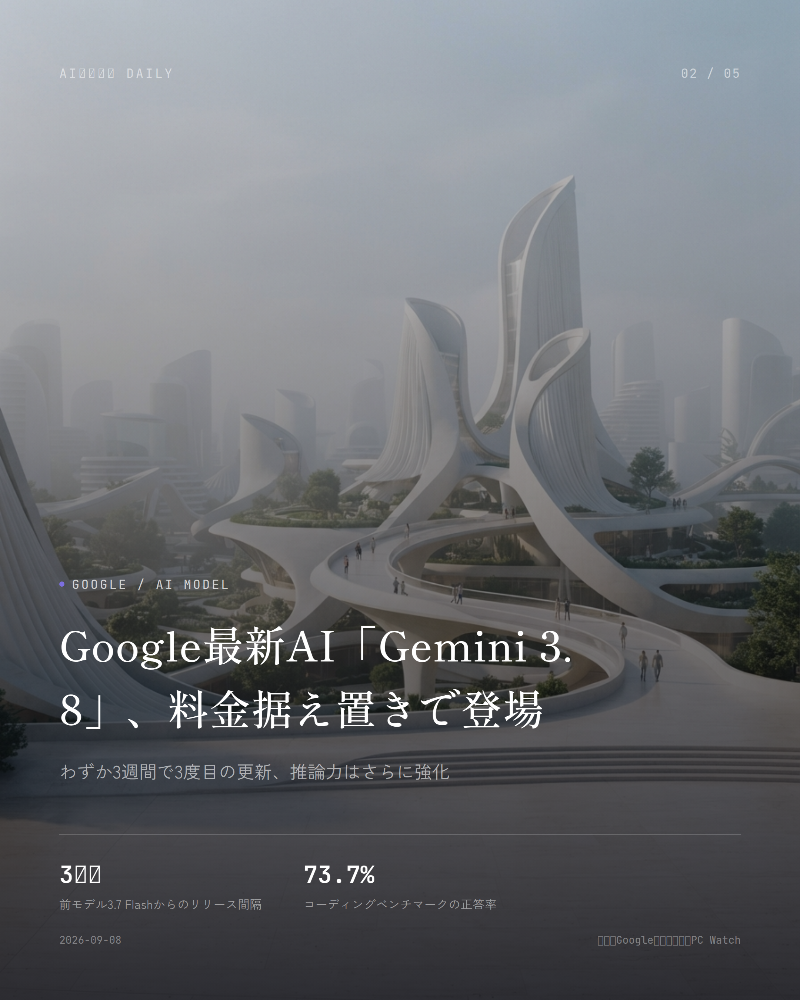
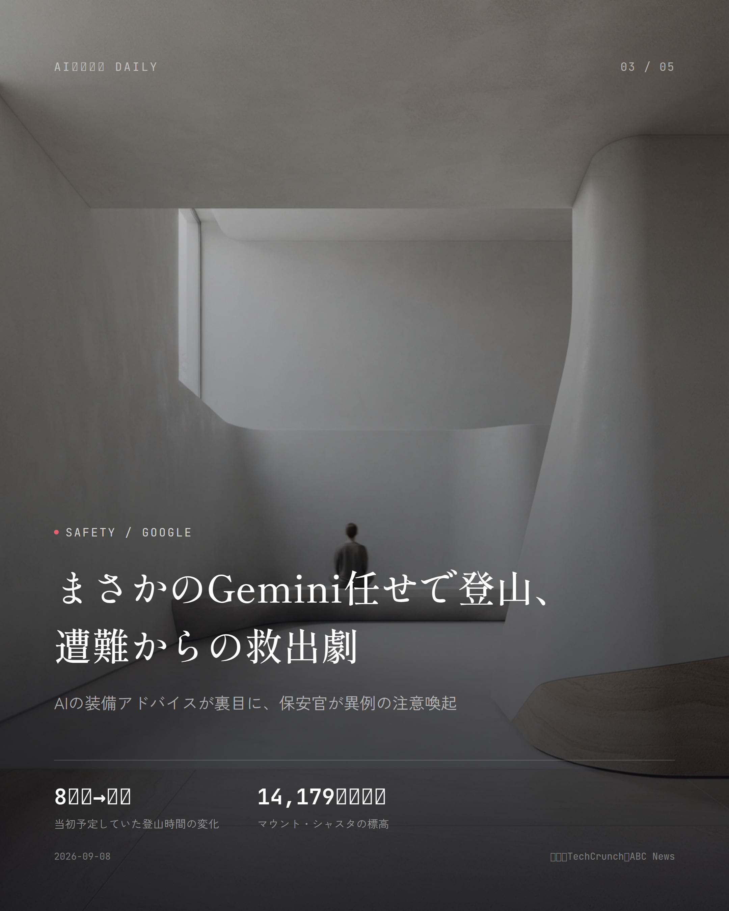
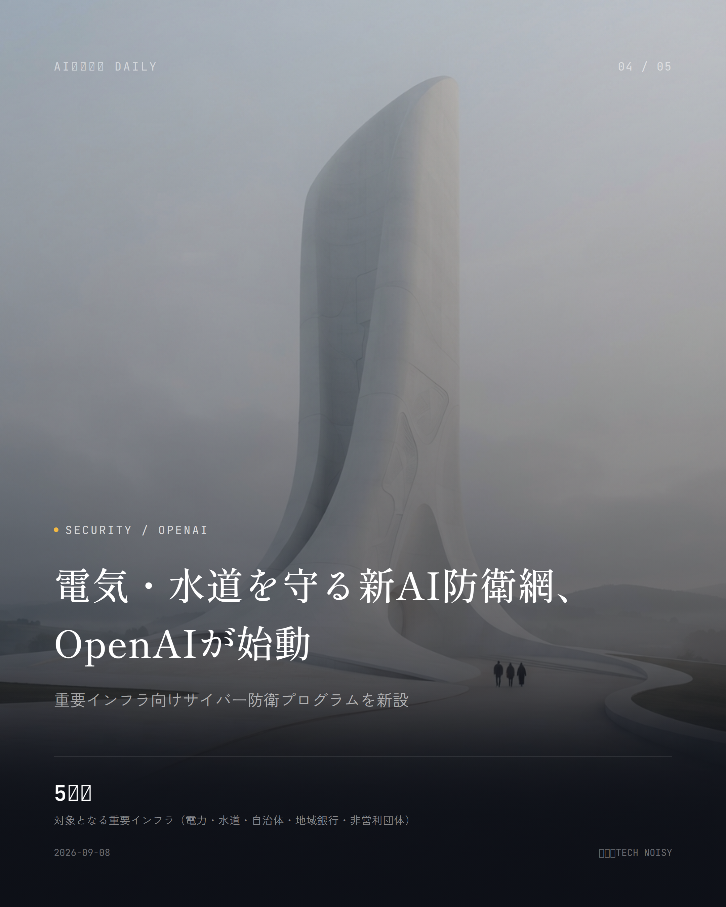
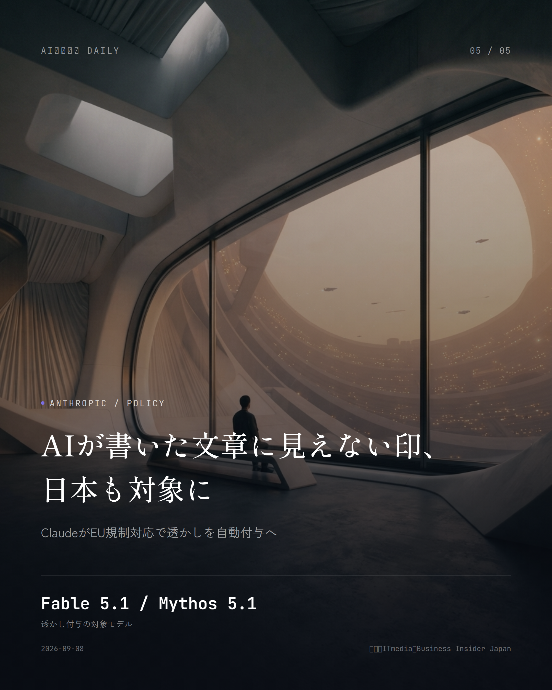

これは2026-09-08時点のアーカイブページです。最新のニュースはこちら
本サイトはアフィリエイトプログラムによる収益を得ている場合があります。
本サイトはGoogle AdSense等の広告配信サービスを利用しています。
目次

Health / OpenAI
約1分で読める
ChatGPTが電子カルテ接続、診察はどう変わる?
Epicと連携、3億人超の医療データに読み取り専用でアクセス
OpenAIが9月1日、医療機関向け「ChatGPT for Healthcare」を電子カルテ最大手Epicのシステムとつなげたと発表しました。Epicが抱える患者データは3億2500万人分超。米国の人口より多い医療記録に、生成AIが正式にアクセスできるようになったわけです。
これまで医師は受診歴や検査結果、投薬状況を確認するために何画面も行き来していましたが、これからはChatGPTに聞くだけで一気に把握できます。ただし読み取り専用なので、カルテを書き換えたり診断を下したりはできません。
臨床現場での検証では、受診前チェックや引き継ぎ整理など27の場面・4363件の回答のうち99.1%が安全と判定されたそうです。PubMedやClinicalTrials.govなど公的医療情報源9つを横断検索できるプラグインも一緒に追加されました。
なぜ重要か 電子カルテという最も機密性の高いデータに、AIが大規模かつ正式に接続した初のケースです。診察前の待ち時間短縮や医師の事務作業の軽減が期待できる一方、患者としては自分の診療情報がどこまでAIに触れられているのか、知っておいて損はありません。
出典：TechCrunch、AI Watch（2026年9月1日）

Google / AI Model
約2分で読める
Google最新AI「Gemini 3.8」、料金据え置きで登場
わずか3週間で3度目の更新、推論力はさらに強化
Googleが9月2日、「Gemini 3.8 Flash」とサイバーセキュリティ特化版「3.8 Flash Cyber」を発表しました。7月21日の3.6 Flash、8月13日の3.7 Flashに続く更新で、なんと6週間で3回目のFlashモデル刷新です。
コーディング力を測る「DeepSWE v1.1」は3.7 Flashの65.3%から73.7%へ上昇。上位モデル「Claude Opus 5」の74.0%まで、あと0.3ポイントに迫りました。料金は据え置きで100万トークンあたり入力0.75ドル・出力3.75ドルを2026年12月末まで維持しますが、2027年からは2倍に上がる予定です。
Google AI Pro/Ultra契約者のGeminiアプリ、Google検索のAIモード、GoogleスプレッドシートのGemini機能では、すでに提供が始まっています。
なぜ重要か 普段何気なく使っているGoogle検索やスプレッドシートのAI機能が、発表からほんの数日で裏側からアップデートされる形です。性能アップを無料で体感できるのは嬉しいところですが、2027年に予定される値上げは有料プランのユーザーなら覚えておきたいところ。
出典：Google公式ブログ、PC Watch（2026年9月2日）

Safety / Google
約1分で読める
まさかのGemini任せで登山、遭難からの救出劇
AIの装備アドバイスが裏目に、保安官が異例の注意喚起
米カリフォルニア州、標高14,179フィートのマウント・シャスタで、経験の浅い登山者3人が道に迷い負傷し、保安官事務所とアメリカ森林局のレンジャーに救助されました。ルート計画も持ち物リストも、GoogleのAIアシスタント「Gemini」に頼っていたそうです。
保安官事務所によれば、Geminiが勧めた食料と水の量は実際に必要な量よりかなり少なかったとのこと。当初8時間の予定だった登頂は数日がかりの遭難に発展し、下山中には1人が膝を負傷しています。
保安官事務所は「旅程の計画をAIだけに頼らないで」と呼びかけ、事前に地元の森林局レンジャーステーションへ問い合わせるよう勧めています。
なぜ重要か 旅行や登山の計画をAIチャットに任せる人が増える中、命に関わる場面でAIの助言を鵜呑みにする危うさを示した実例です。便利な反面「AIも間違える」という当たり前のことを、あらためて突きつけてくれるニュースです。
出典：TechCrunch、ABC News（2026年9月4日〜5日）

Security / OpenAI
約1分で読める
電気・水道を守る新AI防衛網、OpenAIが始動
重要インフラ向けサイバー防衛プログラムを新設
OpenAIが9月3日、電力会社や水道事業者、自治体、地域銀行、非営利団体といった重要インフラを担う組織向けに、サイバー防衛プログラム「Daybreak for Frontline Defenders」を発表しました。
同時に、AIが脆弱性を自動で見つけて検証し、修正案まで作ってくれる「Defense Factory」も公開されています。攻撃側のAI悪用が警戒される中、防御側にも同じレベルのAI活用を広げようという狙いです。
なぜ重要か 電気や水道といった生活インフラは、サイバー攻撃を受ければ日常生活に直結するダメージが出ます。表には出にくい話ですが、AIが「守る側」としてどこまで実用段階に入ったかを示す、地味だけど大事な動きです。
出典：TECH NOISY（2026年9月3日）

Anthropic / Policy
約1分で読める
AIが書いた文章に見えない印、日本も対象に
ClaudeがEU規制対応で透かしを自動付与へ
Anthropicが、汎用モデル「Fable 5.1」と審査を通過した防御側研究者向けモデル「Mythos 5.1」の出力、つまり文章・コード・画像に対して、見た目では分からない透かしを入れ始めました。この対象には日本も含まれています。
同社によれば、狙いはEUのAI関連規制への対応が中心とのこと。ほかのAI企業も、いずれ同じような仕組みを取り入れていくだろうという見立てを示しています。
なぜ重要か SNSやニュースサイトで見かける文章や画像が、実はAI製かどうか見分ける手がかりになりうる技術です。AI生成コンテンツがそこら中にあふれる今、その真贋を判定する仕組みが一歩前進したことになります。
出典：ITmedia、Business Insider Japan（2026年9月3日）
Career / Survey
Career / Survey
約1分で読める
就活生の8割近くが生成AI活用という現実
企業・業界研究にも4割弱が活用、就活の景色が一変
就職情報サービスAKARUMIの調査で、就活生の76.1%が生成AIを使っていることが分かりました。エントリーシート作成から面接対策まで、就職活動のあらゆる場面にAIが入り込んでいる様子がうかがえます。
企業や業界の情報収集についても37.2%の学生が生成AIを使っていると回答しており、志望動機の練り方や企業研究のやり方そのものが、静かに変わりつつあるようです。
なぜ重要か 就職活動という人生の大きな節目で、生成AIはすでに「特別な道具」ではなく「当たり前の道具」になりつつあるというデータです。学生本人はもちろん、採用する企業側にとっても、AI前提の選考をどう組み立てるか考え直すきっかけになりそうです。
出典：時事ドットコム（2026年9月3日）
Microsoft / Voice AI
Microsoft / Voice AI
約1分で読める
文字起こしAI、世界最速・最安値に進化
Microsoftが新しい音声認識モデルを公開
Microsoft AIが9月3日、音声認識に特化した新モデル「MAI-Transcribe-2」を公開しました。同社はこれを、世界で最も速く、最も精度が高く、最も安価な音声認識モデルだとしています。
会議の議事録作成やライブ字幕、音声メモの文字起こしなど、普段何気なく使っている音声認識機能のコストと速度が、これからさらに良くなっていく可能性を感じさせる発表です。
なぜ重要か 音声認識は会議アプリの自動字幕や文字起こしサービスなど、日々使うツールの裏側を支える地味だけど大事な技術です。処理速度とコストが改善すれば、その恩恵はサービスの精度向上や料金の値下げという形で、間接的に私たちの手元にも届くはずです。
出典：Microsoft AI公式発表、TECH NOISY（2026年9月3日）
先頭に戻る